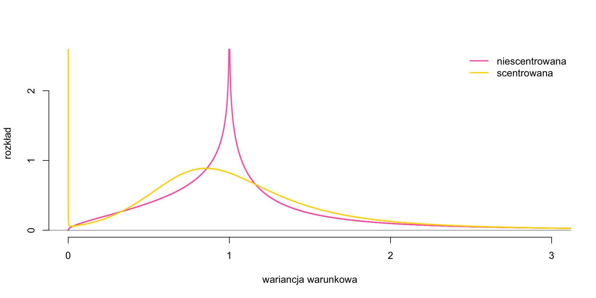

Część pierwsza \[ \]
Wielowymiarowe bayesowskie dynamiczne modele strukturalne z paczek bsvars i bsvarSIGNs dla R
\[ \]
cechy paczek bsvars i bsvarSIGNs
strukturalne modele VAR
identyfikacja modeli strukturalnych
modelowanie rozkładu i zmienności
Część druga \[ \]
Analiza efektów australijskiej polityki monetarnej używając paczki bsvars
\[ \]
Analiza efektów australijskiej polityki monetarnej
ustawienie i estymacja modelu
analizy strukturalne i predyktywne
cechy paczek bsvars i bsvarSIGNs
cechy paczek bsvars i bsvarSIGNs
cechy paczek bsvars i bsvarSIGNs
\[ \]
bayesowska estymacja modeli strukturalnych VAR
koherentna struktura kodu, skryptów i objektów
świetna szybkość obliczeniowa
najnowsze metody ekonometryczne i numeryczne
napisane w C++ dzięki paczkom Rcpp i RcppArmadillo
analiza danych w R
cechy paczek bsvars i bsvarSIGNs
ładowanie paczki i danych
library (bsvars)data (us_fiscal_lsuw)
łatwa inicjalizacja modelu
= specify_bsvar$ new (us_fiscal_lsuw)
= estimate (spec, S = 1000 )= estimate (burn, S = 10000 )
ładowanie paczki i danych
library (bsvarSIGNs)data (optimism)
łatwa inicjalizacja modelu
= specify_bsvarSIGN$ new (optimism)
= estimate (spec, S = 10000 )
cechy paczek bsvars i bsvarSIGNs
= compute_impulse_responses (post , horizon = 12 )= compute_variance_decompositions (post, horizon = 12 )= compute_historical_decompositions (post)= compute_structural_shocks (post)= compute_conditional_sd (post)= verify_identification (post)
= compute_impulse_responses (post , horizon = 12 )= compute_variance_decompositions (post, horizon = 12 )= compute_historical_decompositions (post)= compute_structural_shocks (post)= compute_conditional_sd (post)
cechy paczek bsvars i bsvarSIGNs
= compute_fitted_values (post)= forecast (post, horizon = 12 )
= compute_fitted_values (post)= forecast (post, horizon = 12 )
cechy paczek bsvars i bsvarSIGNs
skrypty z przekierowaniem
library (bsvars)data (us_fiscal_lsuw)|> $ new () |> estimate (S = 1000 ) |> estimate (S = 10000 ) -> post|> compute_impulse_responses (horizon = 12 ) |> plot ()|> compute_variance_decompositions (horizon = 12 ) |> plot ()|> compute_historical_decompositions () |> plot ()|> compute_structural_shocks () |> plot ()|> compute_conditional_sd () |> plot ()|> forecast (horizon = 12 ) |> plot ()|> verify_identification () |> summary ()
skrypty z przekierowaniem
library (bsvarSIGNs)data (optimism)|> $ new () |> estimate (S = 10000 ) -> post|> compute_impulse_responses (horizon = 12 ) |> plot ()|> compute_variance_decompositions (horizon = 12 ) |> plot ()|> compute_historical_decompositions () |> plot ()|> compute_structural_shocks () |> plot ()|> compute_conditional_sd () |> plot ()|> forecast (horizon = 12 ) |> plot ()
cechy paczek bsvars i bsvarSIGNs
strukturalne modele VAR
podstawowe dla modelowania efektów polityki ekonomicznej
analiza dynamicznych efektów przyczynowych dobrze izolowanej przyczyny
stosunkowo proste w pracy z danymi i dostarczają empirycznych dowodów na propagację szoków przez gospodarki i rynki
dostarczają empirycznych faktów do uwzględnienia w modelach teoretyczne
szeroko stosowane w: polityce pieniężnej i fiskalnej , rynku finansowym , …
rozszerzalne: wiele wariantów specyfikacji
nieliniowość
heteroskedastyczność
zmienne parametry w czasie
modelowanie hierarchiczne bayesowskie
zaproponowane przez Sims (1980)
strukturalne modele VAR
model.
\[\begin{align}
\text{równanie VAR: }&& y_t &= \mathbf{A}_1 y_{t-1} + \dots + \mathbf{A}_p y_{t-p} + \mathbf{A}_d x_{t} + \epsilon_t\\[1ex]
\text{równanie structuralne: }&& \mathbf{B}\epsilon_t &= u_t\\[1ex]
\text{structuralne szoki: }&& u_t |Y_{t-1} &\sim N_N\left(\mathbf{0}_N,\text{diag}\left(\boldsymbol\sigma_t^2\right)\right)
\end{align}\]
notacja.
\(y_t\) - wektor \(N\) zmiennych na okres \(t\) \(\mathbf{A}_i\) i \(\mathbf{B}\) - \(N\times N\) macierze parametrów autoregresyjnych i strukturalnych\(\epsilon_t\) i \(u_t\) - wektory \(N\) błędów statystycznych i szoków strukturalnych\(\boldsymbol\sigma_t^2\) - wektor \(N\) wariancji szoków strukturalnych
SVAR: hierarchiczne rozkłady a priori
normalny-uogólniony normalny rozkład a priori dla \(\mathbf{A}\) i \(\mathbf{B}\)
wielopoziomowa estymacja wariancji a priori
rozkład a priori z Minnesoty dla niestacjonarnych szeregów czasowych
bardziej precyzyjne estymacja i prognozowanie
rozkład a priori normalny i odwrócony Wisharta dla \(\mathbf{A}\) i \(\mathbf{\Sigma} = (\mathbf{B}'\mathbf{B})^{-1}\)
estymacja wariancji a priori
rozkład a priori z Minnesoty dla niestacjonarnych szeregów czasowych
bardziej precyzyjne estymacja i prognozowanie
SVAR: modelowanie zmienności
homoskedastyczność \(\boldsymbol\sigma_{n.t}^2 = 1\)
zmienność stochastyczna
stacjonarny proces Markova dla zmienności
nieparametryczny proces Markova dla zmienności
rozkłady szoków
normalny
skończona mieszanka rozkładów normalnych
nieparametryczna mieszanka rozkładów normalnych
rozkład t-Studenta
homoskedastyczność
normalny rozkład szoków
SVAR: identyfikacja
restrykcje zerowe
heteroskedastyczność
nienormalne rozkłady szoków
restrykcje znaków
restrykcje zerowe
restrykcje narracyjne
strukturalne modele VAR
błędy statystyczne.
\[\begin{align}
&&&\\
\text{równanie strukturalne: }&& \epsilon_t &= \mathbf{B}^{-1}u_t = \mathbf{\Theta}_0 u_t\\[1ex]
\text{błędy statystyczne: }&& \epsilon_t |Y_{t-1} &\sim N_N\left(\mathbf{0}_N,\Sigma\right)\\[1ex]
\text{kowariancja: }&& \mathbf\Sigma &= \mathbf{B}^{-1}\mathbf{B}^{-1\prime} = \Theta_0\Theta_0'
\end{align}\]
Notacja.
\(\mathbf\Sigma\) - \(N\times N\) kowariancja błędów statystycznych\(\Theta_0 = \mathbf{B}^{-1}\) - \(N\times N\) macierz efektów strukturalnych
strukturalne modele VAR
Wstaw równanie VAR w równanie strukturalne :
\[\begin{align}
\mathbf{B}y_t &= \mathbf{B}\mathbf{A}_1 y_{t-1} + \dots + \mathbf{B}\mathbf{A}_p y_{t-p} + \mathbf{B}\boldsymbol\mu_0 + u_t\\[1ex]
&\\
\end{align}\]
relacje strukturanlne.
Niech \(N=2\)
\[\begin{align}
\mathbf{B}y_t &= \begin{bmatrix}B_{11}&B_{12}\\B_{21}&B_{22}\end{bmatrix}\begin{bmatrix}y_{1t}\\y_{2t}\end{bmatrix}
\end{align}\]
strukturalne modele VAR
Wstaw równanie strukturalne dla \(\epsilon_t\) w równanie VAR :
\[\begin{align}
y_t &= \mathbf{A}_1 y_{t-1} + \dots + \mathbf{A}_p y_{t-p} + \boldsymbol\mu_0 + \mathbf{B}^{-1}u_t\\[1ex]
y_t &= \mathbf{A}_1 y_{t-1} + \dots + \mathbf{A}_p y_{t-p} + \boldsymbol\mu_0 + \mathbf{\Theta}_0 u_t
\end{align}\]
efekty strukturane.
Niech \(N=2\)
\[\begin{align}
\begin{bmatrix}y_{1t}\\y_{2t}\end{bmatrix} &= \dots +
\begin{bmatrix}\Theta_{11}&\Theta_{12}\\\Theta_{21}&\Theta_{22}\end{bmatrix}\begin{bmatrix}u_{1t}\\ u_{2t}\end{bmatrix}
\end{align}\]
identyfikacja modeli strukturalnych
identyfikacja modeli strukturalnych
kowariancja i relacje strukturalne.
\[\begin{align}
&\\
\mathbf\Sigma &= \mathbf{B}^{-1}\mathbf{B}^{-1\prime}\\[1ex]
\end{align}\]
\(\mathbf\Sigma\) może być estymowana z danychukład równań strukturalnych do rozwiązanie dla \(\mathbf{B}\)
\(\mathbf\Sigma\) jest macierzą symetryczną \(N\times N\) \(\mathbf\Sigma\) ma \(N(N+1)/2\) unikalnych elementów, tj. równań\(\mathbf{B}\) jest \(N\times N\) macierzą z \(N^2\) elementami do estymacjiniewystarczająca liczba równań do estymacji \(\mathbf{B}\)
\(\mathbf{B}\) nie jest indentyfikowalna
identyfikacja modeli strukturalnych
restrykcje zerowe.
\[\begin{align}
&\\
\mathbf\Sigma &= \mathbf{B}^{-1}\mathbf{B}^{-1\prime}\\[1ex]
\end{align}\]
identyfikacja.
jedynie \(N(N+1)/2\) elementów w \(\mathbf{B}\) może być wyestymowanych
nałożenie \(N(N-1)/2\) restrykcji na \(\mathbf{B}\) ułatwia rozwiązanie
wiersze w \(\mathbf{B}\) (i kolumny w \(\mathbf\Theta_0\) ) identyfikowane co do znaku
zmiana znaków wierszy w \(\mathbf{B}\) nie zmienia wartości \(\mathbf\Sigma\)
często zakładamy trójkątną macierz \(\mathbf{B}\)
identyfikacja modeli strukturalnych
restrykcje zerowe.
Niech \(N=2\)
\[\begin{align}
\begin{bmatrix}\sigma_1^2&\sigma_{12}\\ \sigma_{12}&\sigma_2^2\end{bmatrix} &\qquad
\begin{bmatrix}B_{11}&B_{12}\\ B_{21}&B_{22}\end{bmatrix}\\[1ex]
\end{align}\]
3 unikalne elementy w \(\mathbf\Sigma\) - 3 równania
4 elemnty w \(\mathbf{B}\) do rozwiązania
identyfikacja.
\[\begin{align}
\begin{bmatrix}\sigma_1^2&\sigma_{12}\\ \sigma_{12}&\sigma_2^2\end{bmatrix} &\qquad
\begin{bmatrix}B_{11}& 0\\ B_{21}&B_{22}\end{bmatrix}\\[1ex]
\end{align}\]
3 równania pozwalaja rozwiązać 3 niewiadome w \(\mathbf{B}\)
identyfikacja modeli strukturalnych
identyfikacja przez heteroskedastyczność.
Rozważ:
dwie kowariancje, \(\mathbf\Sigma_1\) and \(\mathbf\Sigma_2\) ,
macież \(\mathbf{B}_0\) niezmienna w czasie
kowariancje heteroskedastycznych szoków strukturalnych \(\text{diag}\left(\boldsymbol\sigma_1^2\right)\) i \(\text{diag}\left(\boldsymbol\sigma_2^2\right)\)
\[\begin{align}
\mathbf\Sigma_1 &= \mathbf{B}_0^{-1}\text{diag}\left(\boldsymbol\sigma_1^2\right)\mathbf{B}_0^{-1\prime}\\[1ex]
\mathbf\Sigma_2 &= \mathbf{B}_0^{-1}\text{diag}\left(\boldsymbol\sigma_2^2\right)\mathbf{B}_0^{-1\prime}
\end{align}\]
identyfikacja modeli strukturalnych
identyfikacja przez heteroskedastyczność.
\[\begin{align}
\mathbf\Sigma_1 &= \mathbf{B}_0^{-1}\text{diag}\left(\boldsymbol\sigma_1^2\right)\mathbf{B}_0^{-1\prime}\\[1ex]
\mathbf\Sigma_2 &= \mathbf{B}_0^{-1}\text{diag}\left(\boldsymbol\sigma_2^2\right)\mathbf{B}_0^{-1\prime}
\end{align}\]
identyfikacja.
\(\mathbf\Sigma_1\) i \(\mathbf\Sigma_2\) mają \(N^2+N\) unikalnych elementówwszystkie \(N^2\) elementy w \(\mathbf{B}_0\) mogą być wyestymowane
oba wektory \(\boldsymbol\sigma_1^2\) i \(\boldsymbol\sigma_2^2\) mogą być wyestymowane dzięki założeniu: \(E\left[\text{diag}\left(\boldsymbol\sigma_i^2\right)\right] = \mathbf{I}_N\)
identyfikacja modeli strukturalnych
Rozważ uogólnienie
\[\begin{align}
u_t |Y_{t-1} &\sim N_N\left(\mathbf{0}_N, \text{diag}\left(\boldsymbol\sigma_t^2\right)\right)\\[1ex]
\mathbf\Sigma_t &= \mathbf{B}_0^{-1}\text{diag}\left(\boldsymbol\sigma_t^2\right)\mathbf{B}_0^{-1\prime}
\end{align}\]
identyfikacja.
identyfikacja macierzy \(\mathbf{B}_0\) co do znaków i kolejności wierszy
szoki są identyfikowalne jeśli wariancje warunkowe nie są proporcjonalne
wariancje warunkowe \(\boldsymbol\sigma_t^2\) mogą być wyestymowane
modelowanie zmienności.
Wybierz model dla \(\boldsymbol\sigma_t^2\) o najlepszych właściwościach.
identyfikacja modeli strukturalnych
identyfikacja modeli strukturalnych
równanie strukturalne.
\[\begin{align}
\text{relacje strukturalne:}&&\mathbf{Q}\mathbf{B}\epsilon_t &= \mathbf{Q}u_t\\[1ex]
\text{efekty strukturalne:}&&\epsilon_t &= \mathbf{\Theta}_0\mathbf{Q}'\mathbf{Q} u_t\\[1ex]
\end{align}\]
identyfikacja co do macierzy obrotu.
\[\begin{align}
\mathbf\Sigma &= \mathbf{B}^{-1}\mathbf{Q}'\mathbf{Q}\mathbf{B}^{-1\prime} = \mathbf{\Theta}_0\mathbf{Q}'\mathbf{Q}\mathbf{\Theta}_0^{\prime}\\[1ex]
\mathbf{Q}'\mathbf{Q} &= \mathbf{I}_N\\[1ex]
\end{align}\]
funkcja wiarygodności nie zależy od \(\mathbf{Q}\)
identyfikacja modely zawęża typ \(\mathbf{Q}\)
restrykcje zerowe zmieniają typ macierzy \(\mathbf{Q}\) do diagonalnej z elementami \(\pm1\)
identyfikacja modeli strukturalnych
restrykcje znaku.
\[\begin{align}
\text{relacje strukturalne:}&&\tilde{\mathbf{B}}\epsilon_t &= \tilde{u}_t\\[1ex]
\text{efekty strukturalne:}&&\epsilon_t &= \tilde{\mathbf{\Theta}}_0\tilde{u}_t\\[1ex]
\end{align}\]
restrykcje na znak elementów w \(\tilde{\mathbf{B}}\) i/lub \(\tilde{\mathbf{\Theta}}_0\)
zawęża zbiór identyfikowalny: model jest identyfikowalny co do macierzy obrotu \(\mathbf{Q}\) koherentnej z restrykcjami
estymacja ma za cel przybliżenie zbioru identyfikowalnego
restrykcje znaku i zerowe.
restrykcje zerowe i na znak elementów w \(\tilde{\mathbf{B}}\) i/lub \(\tilde{\mathbf{\Theta}}_0\)
zawęża zbiór identyfikowalny
identyfikacja modeli strukturalnych
restrykcje narracyjne.
restrykcje na znak elementów lub wielkości \(u_t\) lub \(\tilde{u}_t\)
restrykcje w oparciu na narrację, teorię ekonomii i konsensus naukowy
należy dostosować metody estymacji
zawęża zbiór identyfikowalny
nowa cecha.
restrykcje zerowe, narracyjne i na znak w jednym modelu w paczce bsvarSIGNs
modelowanie rozkładu i zmienności
niescentrowana zmienność stochastyczna
\[\begin{align}
&\\
\text{wariancja warunkowa:}&&\sigma_{n.t}^2 &= \exp\left\{\omega_n h_{n.t}\right\}\\
\text{w skali log:}&&h_{n.t} &= \rho_n h_{n.t-1} + v_{n.t}\\
\text{innowacje zmienności:}&&v_{n.t}&\sim N\left(0,1\right)\\
\end{align}\]
świetna zdolność do prognozowania
normalizajca \(\sigma_{n.t}^2 = 1\)
verify_identification() przez ocene restrykcji \(H_0:\omega_n = 0\)
scentrowana zmienność stochastyczna
\[\begin{align}
&\\
\text{wariancja warunkowa:}&&\sigma_{n.t}^2 &= \exp\left\{ \tilde{h}_{n.t}\right\}\\
\text{w skali log:}&&\tilde{h}_{n.t} &= \rho_n \tilde{h}_{n.t-1} + \tilde{v}_{n.t}\\
\text{innowacje zmienności:}&&\tilde{v}_{n.t}&\sim N\left(0,\omega_n^2\right)\\
\end{align}\]
świetna zdolność do prognozowania
zmienność stochastyczna: rozkłady a priori

proces Markowa dla zmienności.
\[\begin{align}
&\\
\text{szoki strukturalne:}&&\mathbf{u}_t\mid s_t \sim N\left( \mathbf{0}_N, \text{diag}\left(\boldsymbol{\sigma}_{s_t}^2\right) \right)\\
\text{a priori:}&& M^{-1}\left(\boldsymbol{\sigma}_{1}^2, \dots, \boldsymbol{\sigma}_{M}^2\right) \sim Dirichlet(\underline{a}\boldsymbol\imath')\\
\text{proces Markowa:}&& s_t\sim \text{Markov}(\mathbf{P},\boldsymbol\pi_0)
\end{align}\]
modelowanie proces Markowa dla zmienności
zapewnia identyfikację
poprawa zdolności do prognozowania
verify_identification() przez ocenę restrykcji \(H_0:\boldsymbol{\sigma}_{1}^2, \dots, \boldsymbol{\sigma}_{M}^2 = 1\)
mieszanka rozkładów normalnych.
\[\begin{align}
&\\
\text{szoki strukturalne:}&&\mathbf{u}_t\mid s_t \sim N\left( \mathbf{0}_N, \text{diag}\left(\boldsymbol{\sigma}_{s_t}^2\right) \right)\\
\text{a priori:}&& M^{-1}\left(\boldsymbol{\sigma}_{1}^2, \dots, \boldsymbol{\sigma}_{M}^2\right) \sim Dirichlet(\underline{a}\boldsymbol\imath')\\
\text{prawdopodobieństwo:}&& Pr[s_t]=\boldsymbol\pi_0
\end{align}\]
modelowanie mieszanki rozkładów normalnych
zapewnia identyfikację
verify_identification() przez ocenę restrykcji \(H_0:\boldsymbol{\sigma}_{1}^2, \dots, \boldsymbol{\sigma}_{M}^2 = 1\)
rozkład t-studenta.
\[\begin{align}
&&&\\
\text{szoki strukturalne:}&&\mathbf{u}_t\mid\mathbf{x}_t &\sim t\left( \mathbf{0}_N, \mathbf{I}_N, \nu \right)
\end{align}\]
\(\nu\) - szacowane z danych stopnie swobodygrube ogony zapewniają identyfikację
poprawa zdolności do prognozowania
verify_identification() przez ocenę restrykcji \(H_0:\nu \rightarrow\infty\)
Australian Monetary Policy Analysis
System of four variables.
Based on Turnip (2017)
\[\begin{align}
y_t = \begin{bmatrix} \Delta rgdp_t & \pi_t & cr_t & \Delta rtwi_t \end{bmatrix}'
\end{align}\]
A lower-triangular identification pattern.
\[\begin{align}
\begin{bmatrix}
B_{11}&0&0&0\\
B_{21}&B_{22}&0&0\\
B_{31}&B_{32}&B_{33}&0\\
B_{41}&B_{42}&B_{43}&B_{44}
\end{bmatrix}
\begin{bmatrix} \Delta rgdp_t \\ \pi_t \\ cr_t \\ \Delta rtwi_t \end{bmatrix} \end{align}\]
In the extended model, the monetary policy shock is not identified
Use identification via heteroskedasticity to identify it
Four-Variable Monetary System
# Gross domestic product (GDP); Chain volume = readrba:: read_rba (series_id = "GGDPCVGDP" )= xts:: xts (rgdp_dwnld$ value, rgdp_dwnld$ date, tclass = 'yearqtr' )= na.omit (400 * diff (log (rgdp_tmp)))= xts:: to.quarterly (drgdp, OHLC = FALSE )# Consumer price index; All groups; Quarterly change (in per cent) = readrba:: read_rba (series_id = "GCPIAGSAQP" )= 4 * xts:: xts (picpi_dwnld$ value, picpi_dwnld$ date, tclass = 'yearqtr' )= xts:: to.quarterly (pi, OHLC = FALSE )# Interbank Overnight Cash Rate = readrba:: read_rba (series_id = "FIRMMCRID" ) # Cash Rate Target = xts:: xts (cr_dwnld$ value, cr_dwnld$ date)= xts:: to.quarterly (cr_tmp, OHLC = FALSE )# Real Trade-Weighted Index = readrba:: read_rba (series_id = "FRERTWI" )= xts:: xts (rtwi_dwnld$ value, rtwi_dwnld$ date, tclass = 'yearqtr' )= 100 * na.omit (diff (log (rtwi_tmp)))= xts:: to.quarterly (rtwi, OHLC = FALSE )= na.omit (merge (drgdp, pi, cr, drtwi))plot (y, main = "Australian monetary system" ,legend.loc = "bottomleft" , col = c ("#FF00FF" ,"#990099" ,"#ededed" ,"#330033" ))
Four-Variable Monetary System
Model Estimation
Lower-triangular model with zero prior mean for \(\mathbf{A}\) .
# estimation - lower-triangular model ############################################################ library (bsvars)set.seed (123 )= specify_bsvar$ new (as.matrix (y), p = 4 , stationary = rep (TRUE , 4 )|> estimate (S = 1000 ) |> estimate (S = 5000 ) -> post
**************************************************|
bsvars: Bayesian Structural Vector Autoregressions|
**************************************************|
Gibbs sampler for the SVAR model |
**************************************************|
Progress of the MCMC simulation for 1000 draws
Every draw is saved via MCMC thinning
Press Esc to interrupt the computations
**************************************************|
**************************************************|
bsvars: Bayesian Structural Vector Autoregressions|
**************************************************|
Gibbs sampler for the SVAR model |
**************************************************|
Progress of the MCMC simulation for 5000 draws
Every draw is saved via MCMC thinning
Press Esc to interrupt the computations
**************************************************|
Compute impulse responses
|> compute_impulse_responses (horizon = 20 ) |> plot ()
Compute forecast error variance decompositions
|> compute_variance_decompositions (horizon = 20 ) |> plot ()
Compute structural shocks
|> compute_structural_shocks () |> plot ()
Compute fitted values
|> compute_fitted_values () |> plot ()
Compute forecasts
|> forecast (horizon = 8 ) |> plot (data_in_plot = 0.3 )